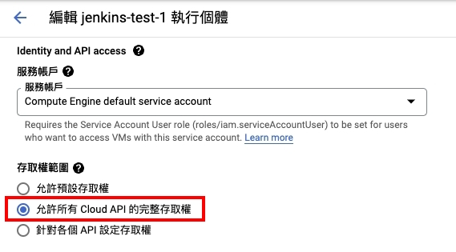
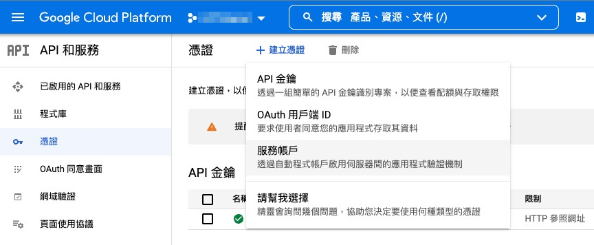
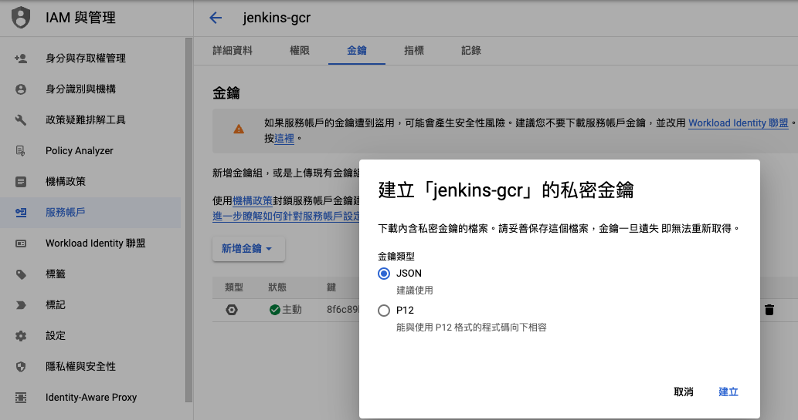
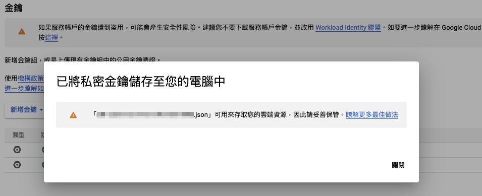
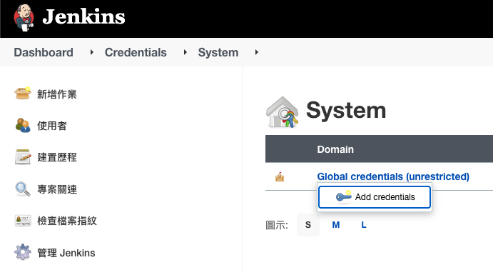
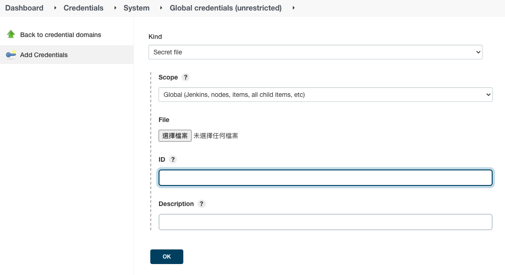
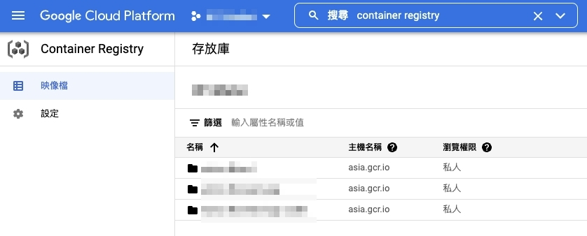

Jenkins CI/CD 03 - Building and Pushing Docker Images to GCR
This article discusses the process of building a Docker image and pushing it to the Google Container Registry (GCR) within a Jenkins pipeline using the 'gcloud' command.

Google Container Registry is a service provided by Google for storing, managing, and securing Docker container images.
The objective at hand is to package a Docker image and push it to Google Cloud Platform (GCP) using the ‘gcloud’ command for future deployment purposes.
Google Container Registry (GCR) Service
First and foremost, you need a Google Cloud project, which can be created following the instructions provided in the official documentation: Creating and managing projects .
Installing gcloud on the Jenkins Host
The following steps outline the installation process for gcloud as the official documentation: Installing the gcloud CLI .
Prerequisites
Ensure that the following packages are installed: apt-transport-https, ca-certificates, and gnupg.
You can list all installed packages using the following command:
apt list --installed
If any of the packages are missing, you can install them using the following command:
sudo apt-get install apt-transport-https ca-certificates gnupg
Add the gcloud CLI Distribution URI as a Package Source
echo "deb [signed-by=/usr/share/keyrings/cloud.google.gpg] https://packages.cloud.google.com/apt cloud-sdk main" | sudo tee -a /etc/apt/sources.list.d/google-cloud-sdk.list
# If 'signed-by' is not supported, you can use the following command instead
echo "deb https://packages.cloud.google.com/apt cloud-sdk main" | sudo tee -a /etc/apt/sources.list.d/google-cloud-sdk.list
Import the Google Cloud Public Key
If the apt-key command supports the --keyring parameter, you can use the following command:
curl https://packages.cloud.google.com/apt/doc/apt-key.gpg | sudo apt-key --keyring /usr/share/keyrings/cloud.google.gpg add -
Otherwise, you can use the following command:
curl https://packages.cloud.google.com/apt/doc/apt-key.gpg | sudo apt-key add -
For Debian 11+ or Ubuntu 21.10+ distributions that do not support the apt-key command, you can use this command:
curl https://packages.cloud.google.com/apt/doc/apt-key.gpg | sudo tee /usr/share/keyrings/cloud.google.gpg
Update and Install gcloud CLI
Run the following commands to update and install the gcloud CLI:
sudo apt-get update && sudo apt-get install google-cloud-cli
Initialize gcloud
Since we are operating gcloud within a Google Compute Engine virtual machine under the same GCP project,
the gcloud auth login step is skipped.
Instead, the VM host is used as the login account, and the command will prompt for confirmation as follows:
You are running on a Google Compute Engine virtual machine.
It is recommended that you use service accounts for authentication.
You can run:
$ gcloud config set account `ACCOUNT`
to switch accounts if necessary.
Your credentials may be visible to others with access to this
virtual machine. Are you sure you want to authenticate with
your personal account?
Do you want to continue (Y/n)?
You can check the list of projects with the following command:
gcloud projects list
If you encounter the error message:
ERROR: (gcloud.projects.list) PERMISSION_DENIED: Request had insufficient authentication scopes.
First stop the VM and navigate to the editing page.
Find the Access scopes section and enable Full access to all Cloud APIs.

After restarting the VM, execute the command and follow the prompts:
gcloud init
# Your Google Cloud SDK is configured and ready to use!
You can use the following command to confirm the configuration settings:
gcloud config configurations list
Setting Jenkins Permissions for Push
Once you’ve verified that the gcloud command is functional, you need to set up Jenkins to push images to GCR.
Generate a GCP Key
Navigate to the GCP Console, click on APIs & Services, and select the Credentials tab.
Click Create credentials and choose Service Account.

Follow the prompts to create the service account, then click on the account you just created to enter the edit page.
Switch to the Keys tab and click “Add Key -> create a new key” choosing the “JSON” type.

A download prompt will appear; download the JSON key file to your local machine.

Configure the Key in Jenkins
進到Jenkins -> 管理 Jenkins -> Manage Credentials
選擇作用範圍，這邊用預設的Jenkins也就是全域(global)
Navigate to Jenkins -> Manage Jenkins -> Manage Credentials.
Choose the scope, which, in this example, is the default Jenkins as global.

Click “Add Credentials” and select Secret file. Fill in the required information:
- ID: A unique identifier for calling within Jenkins, in this example, it is named
jenkins-gcr. - File: Upload the JSON key file you downloaded earlier.

This completes the Jenkins key setup.
Pipeline Example
// jenkinsfile
pipeline {
agent any
environment {
GCR_HOST = "asia.gcr.io" // Choose a GCR host location that is geographically close or simply use gcr.io
PROJECT_ID = "my-project-315408" // The ID of your GCP project
FOLDER = "my-project-backend-test"
VERSION = "${TAG_NAME}"
IMAGE = "$GCR_HOST/$PROJECT_ID/$FOLDER:$VERSION" // Assemble the image name
}
stages {
stage('Build docker image') {
when {
branch 'main'
}
steps {
// Docker build command specifying the path to the Dockerfile in your project
sh "docker build . -f ./builds/docker/php81/Dockerfile -t ${IMAGE}"
}
}
stage('Push image to Google Container Registry') {
when {
branch 'main'
}
steps {
// 'jenkins-gcr' is the unique identifier ID set up earlier
withCredentials([file(credentialsId: 'jenkins-gcr', variable: 'GC_KEY')]) {
sh "cat '$GC_KEY' | docker login -u _json_key --password-stdin https://asia.gcr.io"
sh "gcloud auth activate-service-account --key-file=${GC_KEY}"
sh "gcloud auth configure-docker"
echo "Pushing image to GCR"
sh "docker push ${IMAGE}"
}
}
}
}
}
Finally, trigger the Jenkins service, which, in the example, is done by pushing commits to the main branch.
Checking the Storage Location
若是沒有錯誤訊息，則可以到Google Cloud Registry頁面查看
把剛剛上傳的 image 名稱想成在 linux 終端機下指令，就可以理解 GCR 中的資料夾結構
If no error messages were encountered, you can check the Google Cloud Registry page to view the image.
The image name in GCR is analogous to the path structure in Linux.
